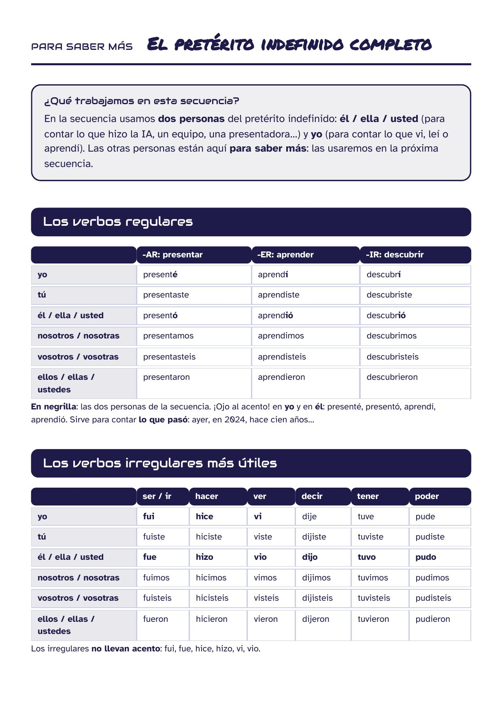

Le principe
Les élèves découvrent des documents authentiques sur l’IA dans le monde hispanique (une influenceuse virtuelle en Espagne, l’archéologie à Nazca, l’arbitrage de la Liga MX, une présentatrice en quechua, Latam-GPT au Chili), apprennent à raconter ce qui s’est passé (pretérito indefinido : él / ella puis yo) et à donner leur avis. Tâche finale : chaque élève reçoit une nouvelle unique sur l’IA et la raconte par écrit à un ami espagnol.
| Objectif | Contenu |
|---|---|
| Linguistique | Comprendre des documents authentiques écrits et oraux ; rendre compte d’un document (médiation) ; donner et justifier son avis |
| Culturel | L’IA et l’innovation dans le monde hispanique : Espagne, Pérou, Mexique, Chili, puis 35 nouvelles d’Espagne et d’Amérique latine |
| Grammatical | Présent (ser / parecer / poder + infinitif) ; pretérito indefinido à la 3e personne du singulier (séance 3) puis à la 1re (séance 4) ; SER / ESTAR |
| Lexical | L’IA, les réseaux sociaux, les médias ; l’opinion (para mí, creo que, porque) |
| Phonologique | L’accent tonique qui distingue présent et passé : analizo / analizó |
| Citoyen | Distinguer le réel du virtuel, exercer son esprit critique face à l’IA |
Les 6 séances
1¿Quién es Aitana López?Clase entera. Perfil de Instagram y artículo en 3 partes: la influencer virtual que no existe. Presente; real / virtual / falso. Incluye la introducción de la secuencia.
Fiche + introduction2Aitana: ¿nos ayuda o nos engaña?
Clase entera. Restitución de las redacciones, pequeño debate en grupos de 4, SER / ESTAR, vocabulario de la opinión.
Fiche3¿Qué esconde el desierto de Nazca?
Artículo de BBC Mundo. Descubrimiento del pretérito indefinido en 3.ª persona del singular (-ó / -ió, fue, hizo, dijo…).
Fiche4La IA en acción
Tabletas, en binomio: vídeo A (Liga MX) o B (Illariy, quechua), 4 etapas, mediación. Se introduce yo en el pasado (vi, leí, aprendí, fui).
App + fiche5Entrenamiento al examen
Examen blanco sobre Latam-GPT (Chile): comprendo, me expreso, me corrijo con el baremo del socle. En línea o en papel; versión ★.
App + fiches6Evaluación final · ¡Cuéntaselo a tu amigo!
Una tarjeta-noticia única por alumno (35 tarjetas, todas hispánicas). Parte 1 comprendo (4 pts), parte 2 me expreso (16 pts). Versión ★ para los PAP.
Fiches + 35 tarjetas
Applications en ligne
Plan de trabajo (séance 4) Entraînement à l’examen (séance 5)
Mode professeur du plan de travail : ajouter #profe à l’adresse pour accéder aux bonus sans terminer les étapes (#alumno pour revenir au mode élève).
Para saber más · le pretérito indefinido complet
Page de référence collée dans le cahier : le paradigme complet (réguliers et irréguliers), avec les deux personnes de la séquence en gras. Référence, pas objet d’exercices.

Documents et sources
| Séance | Document | Source · pays |
|---|---|---|
| 1–2 | Aitana López, influenceuse créée par IA | El Espectador · Espagne |
| 3 | Les géoglyphes de Nazca découverts grâce à l’IA | BBC News Mundo / Prensa Libre · Pérou |
| 4 A | Le hors-jeu semi-automatique de la Liga MX | La Razón · Mexique |
| 4 B | « Así es Illariy », présentatrice virtuelle en quechua | CNN en Español · Pérou |
| 4 bonus | Dalí Lives · Bad Bunny et FlowGPT | Musée Dalí · N+ (Porto Rico) |
| 5 | Latam-GPT, la première IA latino-américaine | CNN Chile · Chili |
| 6 | 35 nouvelles vérifiées (Espagne, Mexique, Colombie, Argentine, Venezuela, Équateur, Pérou, Chili, Porto Rico…) | Presse hispanophone · photos Wikimedia Commons |